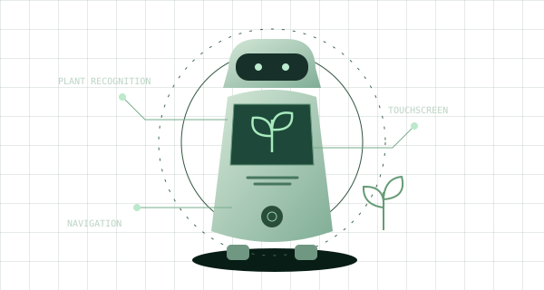

HERBIQ / ROBOTICSCONCEPT STUDY

Technology rooted in nature
01 ROBOTICS × EDUCATION
HerbiQ
Ayurvedic Heritage Guide Robot
A smart guide for Ayurvedic gardens and botanical spaces, combining plant recognition, multilingual interaction, navigation and touchscreen learning.
Project details
Developed as part of WRO India 2026 project work. HerbiQ
brings hardware, AI and an educational touchscreen interface
together for gardens, museums and schools. The project
explores plant recognition, multilingual guidance and
sensor-based navigation.